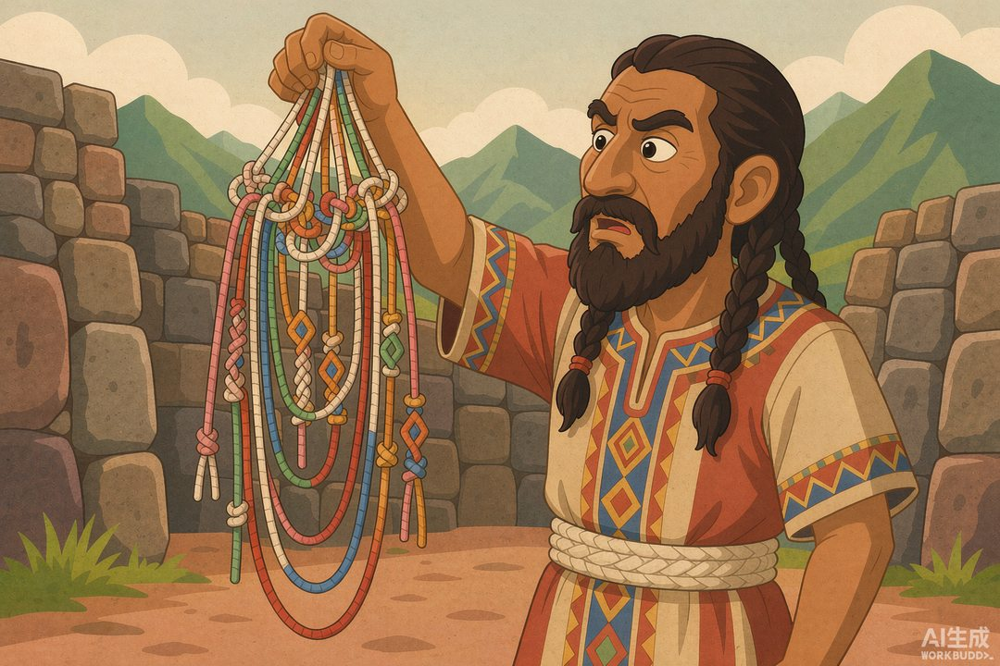
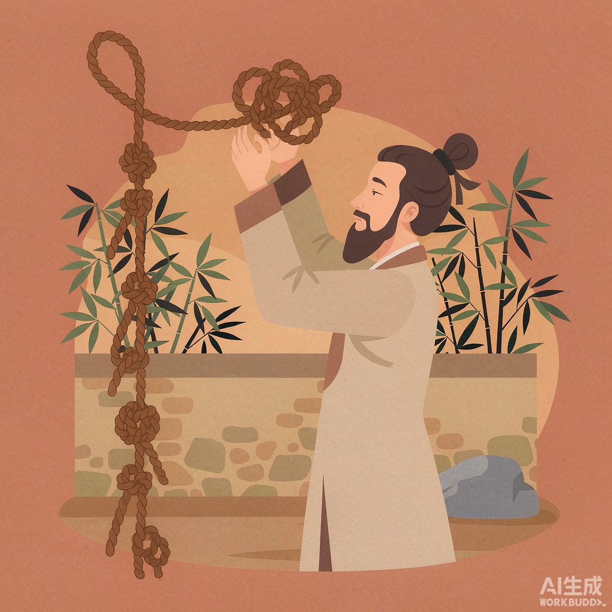

|
信息传播那些事儿 · 卷一 信息的黎明 · 第03篇 |
|
结绳记事：上古的 Excel 表 |

▲ 印加结绳官：六百年前的「数据分析师」（AI 生成示意图）
|
上篇说完，壁画最大的毛病是搬不走——牛画在这面墙上，就归这面墙，明天部落搬家，你总不能把山背走。人类想出的第一个办法朴素得可爱：拿根绳子，打个结。一个结记一头羊，羊死了解开一个结。这就是人类最早的「Excel 表」。 |
你今天打开 Excel，拉个表格记库存。觉得这是现代人的发明？
错。六百年前，南美安第斯山脉上有一群人，用一根绳子就干了同样的事——而且干得相当漂亮。
|
一、一个结，记一头羊 |
先把镜头拉到没有文字的远古。一个牧羊人，羊就是他的全部财产。问题来了：怎么记住自己到底有几只羊？
靠脑子？十只八只还行，一百只羊脑子就乱成一锅粥，何况羊还会偷偷生、偷偷死、偷偷被狼叼走。
于是人类干了件天才的事：拿根绳子，每有一只羊，打一个结。
母羊下崽，加一个结；羊被狼吃了，解开一个结。绳子挂在腰上，走哪儿带到哪儿。傍晚数一遍结，今天丢没丢羊，一目了然。
这玩意儿厉害在哪？它把「流动的世界」变成了「固定的数字」。羊会跑、会死、会生，但绳结不会自己变——除非你动手。绳结，是人类第一个活的账本。
再往下想一层：不止记羊。今天打了三只猎物，打三个结；明天采了五筐果子，打五个结。慢慢你会发现，整个世界都能被拆成「什么东西 + 多少个」，然后塞进一根绳子。
这其实就是 Excel 最核心的动作：分类，然后计数。三万年前的人早就会了。
|
二、印加人把这事干到了极致 |
牧羊人的小绳结是玩具，印加帝国的结绳是国家级基础设施。
印加帝国（1438—1533 年前后），鼎盛时横跨整个南美洲西海岸，几百万人口，却没有文字。那它怎么管这么大一个摊子？靠一种叫 quipu（克丘亚语，意思是「结」）的绳子。
构造不复杂，但极聪明：一根粗的母绳横在顶上，下面垂下许多根彩色支绳，每根支绳上打一串结。
计数是十进制，和我们今天一样：高位在上，低位在下。打个比方，要记「234」——百位那打 2 个单结，十位那打 3 个单结，个位那打 4 圈「长结」。一根绳子，就能读出一个三位数。
更妙的是它的「多维编码」：绳子的颜色代表类别——黄绳记金子、白绳记银子、红绳记士兵、绿绳记庄稼（具体对应没完全破译，但逻辑清楚）。你把它展开，就是一张表格：颜色是「列名」，绳结是「数值」。
印加人拿它记人口、记仓储、记赋税、记兵员、记土地、记历法，甚至连重大事件都往里装。一个帝国，活在一把绳子里。
▲ 两万年前的「骨制算盘」：刻一道，记一次（AI 生成示意图）
讲到这儿，必须先补一个更古的彩蛋。
结绳之前，人类早就在骨头上记账了。刚果出土过一根「伊尚戈骨」，距今约两万年，骨头上整整齐齐刻着三列划痕。考古学家普遍认为，那是史前人的计数工具——刻一道，记一次；数到一段落，换一列接着刻。
你看，「把数量刻下来」的冲动，比文字早了不止几万年。绳子和骨头，是同一件事的两个版本：人类想把「多少」固定住，好以后能核对、能汇总。
|
三、关键问题：谁在生产？ |
回到这个系列的「四问」。这一篇，继续答第一问：谁在生产信息？
牧羊人自己打结，那会儿还算是「人人都能干」。但印加的 quipu 一升级，门槛就上来了。
帝国养了一批专职的 quipucamayoc（基普卡马约奇，意思是「管结绳的人」）。他们从小受训，专门负责编绳、读绳、核对。史书上说，有些老结绳官闭着眼睛都能把绳子「读」出来——那是真·技术官僚。
还有更绝的：印加有专门的接力信使 chasquis，沿帝国道路系统飞跑，把一把把 quipu 从偏远省份送到首都库斯科。绳子轻、能卷、好携带，跑几天就到了——帝国的「数据」，第一次实现了跨省实时同步。
所以你看，从壁画到结绳，「生产信息的人」进一步收窄了：不是谁都能发布（壁画要会爬洞会调色），也不是谁都能记账（结绳要懂十进制和颜色编码）。一小撮被训练过的专业人士，开始替整个社会「算账」。
这批结绳官，是今天税务局、统计局、数据库管理员（DBA）的遥远祖宗。
|
四、中国人也这么干过 |
别以为结绳只是印加人的绝活。咱们老祖宗也干过，而且写进了经典。
《易经·系辞下》有一句名言：「上古结绳而治，后世圣人易之以书契，百官以治，万民以察。」
翻译一下：伏羲那会儿，大事打个大结，小事打个小结，靠着绳结就把天下治理了。后来出了个圣人（一般认为是仓颉），发明了文字，才用「书契」取代结绳。
你看，东西方的古人不约而同发现同一件事：绳子是人类最好用的「外挂内存」。不止中国、印加，波斯、西非、琉球、夏威夷……全世界好多地方都有结绳传统。
而且结绳的思维压根没消失。你今天记账、打勾、列待办清单、在 Excel 里拉一列——本质上，都还是「打结」。换了张皮，内核没变。

▲ 「上古结绳而治」：大事大结，小事小结（AI 生成示意图）
|
数字锚点 · 一把绳子撑起一个帝国 | |||||||||||||||
哈佛人类学家加里·乌尔顿至今在找一把「罗塞塔 quipu」——能对照破译绳结里是否藏着故事与历史的那一把。结绳能记数字，但是否能记「文章」，仍是谜。 | |||||||||||||||
|
五、信息第一次「分家」 |
把第02篇和第03篇放一起看，会发现一件大事：信息第一次分成了两路。
壁画，是给人看的——它是叙事，是故事，是「想让你看到的生活」。结绳，是给算的——它是数据，是数字，是「多少」和「什么」。
一个求「好看」，一个求「能算」。从这儿开始，人类的 information 有了两条腿：一条腿负责打动人，一条腿负责算清账。
而结绳这一路，直接通向了今天的一切「结构化存储」：账本、数据库、Excel、乃至 AI 训练前要先整理好的「干净数据」。把世界拆成类别和数字再装进载体——这套思维，绳结是祖宗。
|
下篇预告 · 第04篇《烽火戏诸侯：世界上第一份「假新闻」》——结绳记得了数字，却记不了真假。一旦有人故意打错结、点错烽火，信任就成了最贵的资产。一个用假消息玩到亡国的男人，下周见。 |
|
本篇涉及的印加 quipu、伊尚戈骨、中国结绳而治等史实，转引自加里·乌尔顿（Gary Urton）等学者研究、印加考古公开资料及《易经》文献；配图为 AI 生成示意图。 |